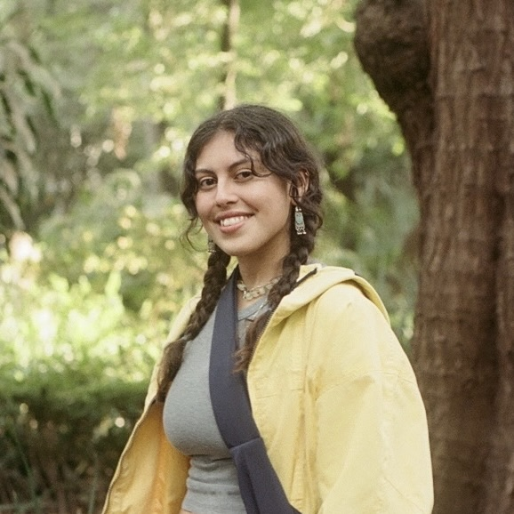

Hi, I'm Camila! 
A recent graduate from the University of Michigan's School of Information, where I studied UX Design and Research. But my path to design didn't start there — it started with a love of words and storytelling, paired with an early interest in graphic design. What makes a book or an app impossible to close? That question carried me into design almost accidentally.
As an English major, I was drawn to the challenge of shaping language within visual systems, too. This led me to pursue a master's in User Experience, with a focus on visual graphics — bridging design and words.
